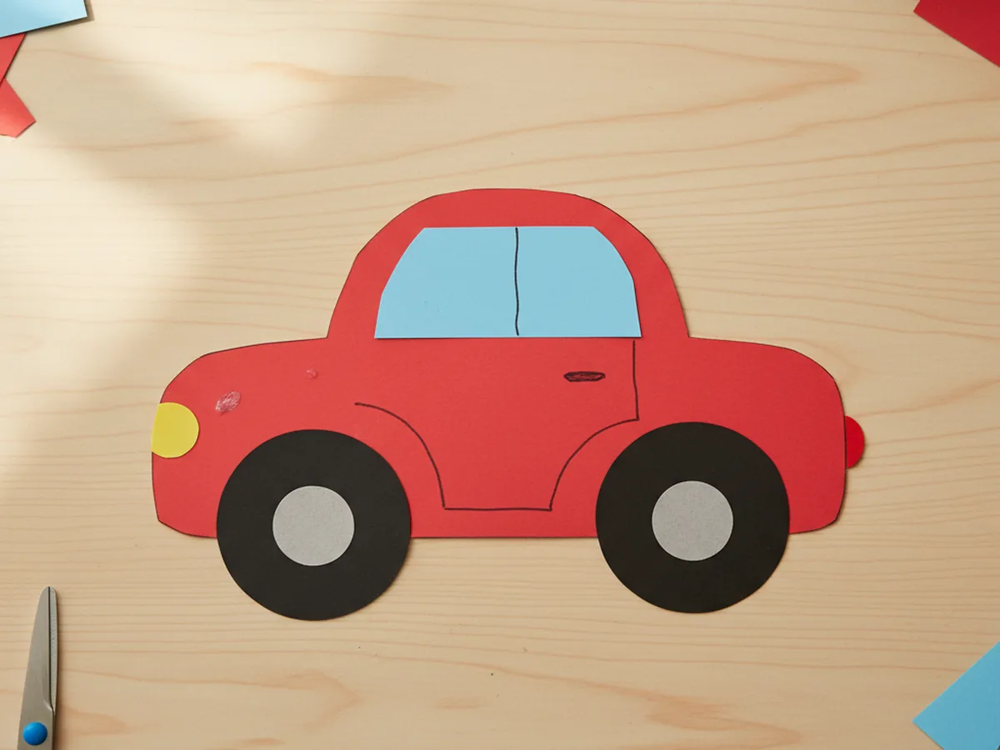
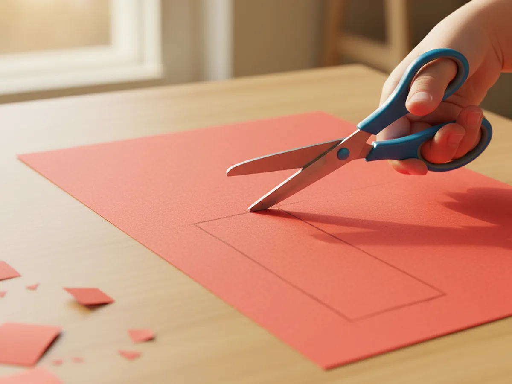
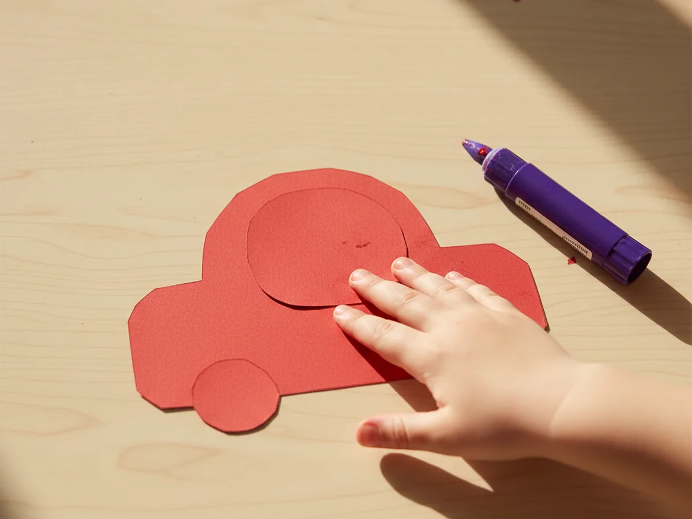
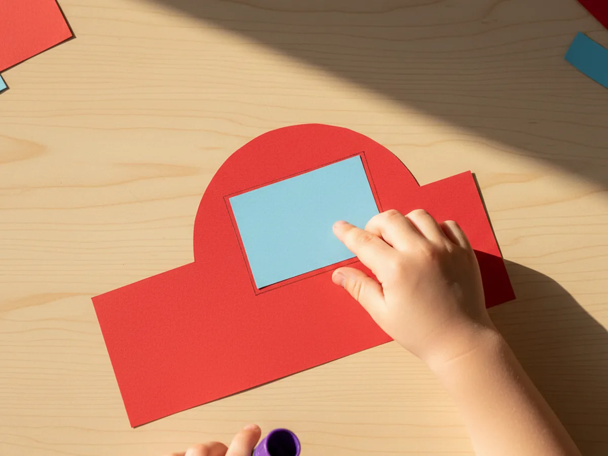
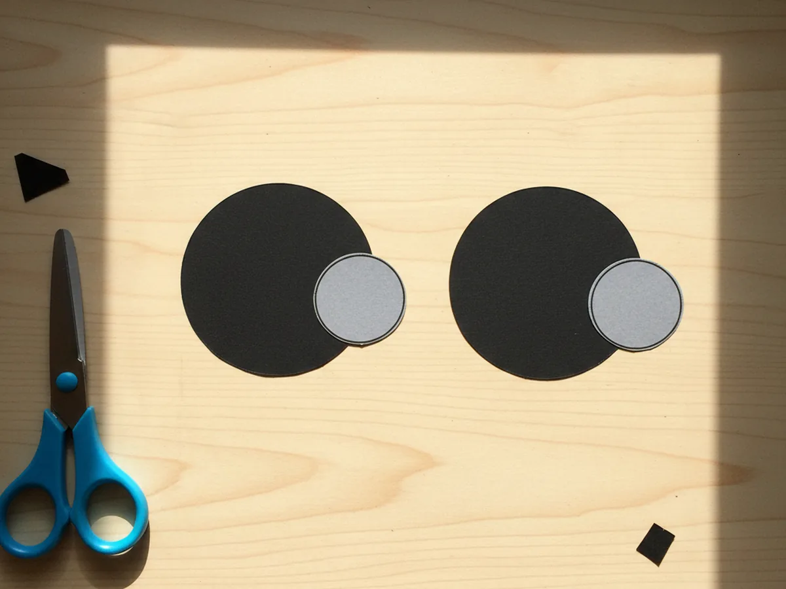
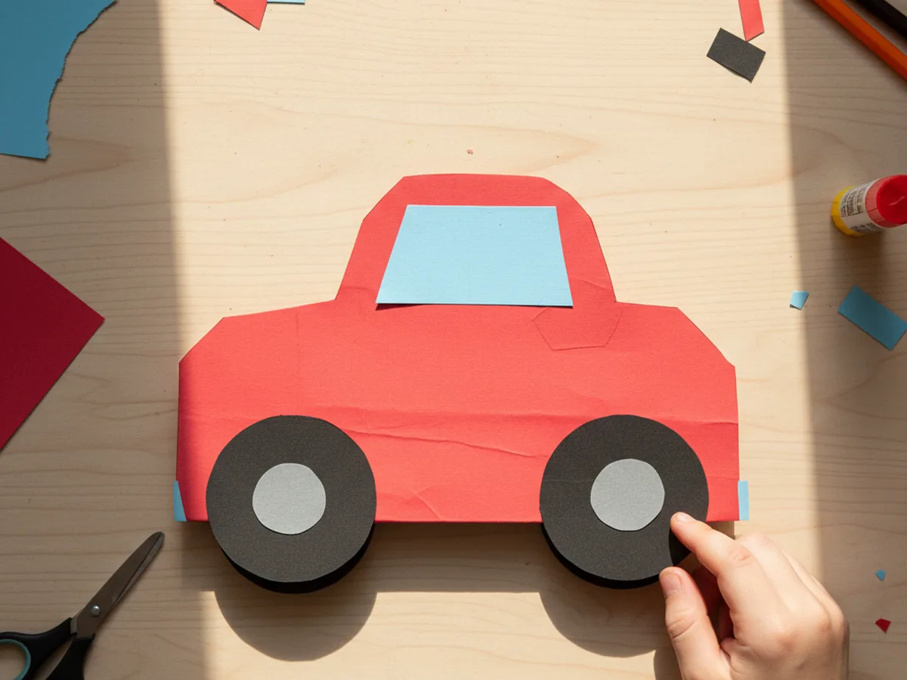
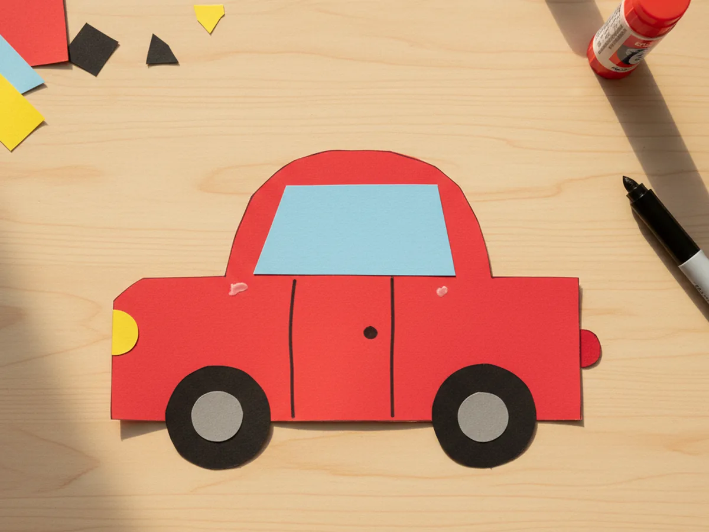
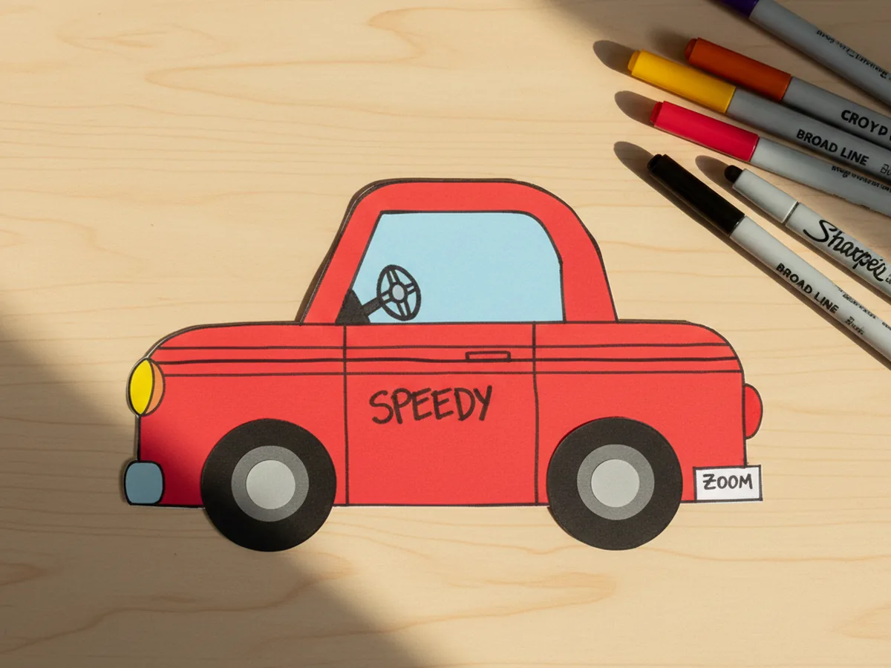

This little paper car craft is one of those magical projects where a few rectangles of cardstock turn into a toy your child carries around the rest of the afternoon. You cut a long body, layer on a rounded cabin, glue two black wheels under it, and add a window, headlights, and a tiny door line. That is the whole build, and the moment your child sees the finished car they instantly start zooming it across the table making little engine sounds. 🚗
It is a wonderful project for kids age 3 and up, and a calm, low-mess activity to do with a mom at the craft table. Younger toddlers can press the shapes flat and decorate, while older kids can handle most of the cutting on their own. Either way, your paper car craft ends up cute, sturdy, and very loved.
Why Kids Love This Craft
Children are wired to love anything with wheels, and a homemade car they built themselves feels even more special than a toy from the store. As soon as the wheels go on and the headlights light up the front of the car, your child will start narrating little adventures: a trip to grandma's house, a race against a tiny paper truck, a quick stop at the pretend gas station. That kind of pretend play is pure gold for their imagination.
This paper car craft for kids also gently builds real skills without ever feeling like a lesson. Cutting the body and the round wheels supports scissor practice. Lining up the cabin on top of the body helps with hand-eye coordination. Adding tiny details like the door, the headlights, and a license plate is a wonderful fine motor moment. None of it feels like work because the whole project is wrapped in the excitement of building a vehicle.
The decorating step is where every child's personality comes out. Some kids want bright racing stripes, some add stickers all over the side, some draw the family inside through the window. There is no wrong version of an easy paper car craft, and that freedom is exactly what makes children proud of what they built. By the time the last marker stroke is dry, the car has a name, a story, and a destination.
What You'll Need
Here is everything you need to make this paper car craft at home, with most supplies probably already living in your craft drawer.
- Crayola Construction Paper, 240 ct, gives you red, blue, yellow, white, and grey scraps for every part of the car
- Astrobrights Black Cardstock, 65 lb, sturdier than regular construction paper and perfect for wheels that hold their shape
- Elmer's Disappearing Purple Glue Sticks, easy for little hands and dries clear so no white residue shows on the car body
- Fiskars Blunt-Tip Kids Scissors, safe for ages 4 and up and just right for these small shapes
- Crayola Broad Line Markers, for adding playful color details, racing stripes, and a fun pretend brand name
- Sharpie Fine Point Marker, Black, makes crisp small lines for the door, the license plate, and the steering wheel
- AIEX Gold Brads, 600 ct, optional, but lets the wheels actually spin for older children
- Westcott Clear Plastic Ruler, helpful for measuring the car body so the rectangle stays neat
- A pencil, optional for sketching the rectangle and circles before cutting
Step-by-Step Instructions
Take this one calm step at a time and your child will have their own little vehicle in about half an hour. Let them help with every part, even if they just press the shapes flat for you.
Step 1: Cut the Car Body
Start by cutting a long rectangle from a piece of colored cardstock or construction paper. About 6 inches wide and 2.5 inches tall makes a nice classic car shape. Red, blue, and yellow are always favorites for this paper car craft, but let your child pick the color. Use a ruler and a pencil to lightly mark the rectangle first if your child is doing the cutting. The corners do not need to be perfect, and a slightly imperfect shape gives the car a charming handmade look.

Step 2: Cut and Glue On the Top of the Car
From the same colored paper, cut a smaller rounded shape for the cabin, about 4 inches wide and 1.5 inches tall, with a softly curved top. Think of a gentle hill shape that sits over the middle of the body. Apply glue to the back of the cabin and press it firmly onto the top half of the rectangle, slightly toward the center, leaving a little space on each side for the front and back of the car. Hold it flat for a few seconds while it sets.

Step 3: Add the Window
Now cut a smaller light blue or pale grey paper rectangle, about 2.5 inches wide and 1 inch tall, with the corners rounded slightly to match the curve of the cabin. Glue it onto the rounded cabin shape, leaving a little colored border around it so it stands out as a window. This is where the family will sit during all the pretend road trips, so make it just big enough for one or two stick figure passengers later if your child wants to draw them in.

Step 4: Cut the Wheels
Time for the most exciting part of any car: the wheels. Cut two large black paper circles, each about 1.5 inches across. The easiest way is to trace around a small jar lid, a roll of tape, or a coffee mug bottom and then cut along the line. Then cut two smaller grey paper circles, about three quarters of an inch across, to use as hubcaps in the center of each wheel. Black cardstock is great here because it keeps its shape better than thin paper.

Step 5: Attach the Wheels
Glue each grey hubcap onto the center of a black wheel and press flat. Then turn the car body over so the back is facing up, apply glue to the top half of each wheel, and stick one wheel under each end of the car body so the bottom half of each circle peeks out below the rectangle. Flip the car back over and check that both wheels are at the same height. This is the moment the paper car craft really starts to look like a car, and most kids gasp a little when they see it.

Step 6: Add Headlights and a Door
Cut a small yellow paper circle, about half an inch across, and glue it to the front of the car as a headlight. Cut a tiny red paper circle and glue it to the back as a tail light. Then use a black fine-tip marker to draw a simple curved line on the side of the car to suggest a door, plus a small dot for the door handle. These tiny details make a huge difference and instantly turn a flat shape into a recognizable little vehicle.

Step 7: Decorate the Paper Car Craft
Now for the playful part. Hand your child the broad line markers and let them go to town. They might add racing stripes down the side, a license plate near the back, a steering wheel inside the window, or a silly brand name like Bunnymobile or Sparkle Speedy across the door. Stickers are very welcome here, and so are tiny paper flames or hearts. Once the marker is dry, your cute paper car craft is ready for its first pretend trip across the kitchen table. ✨

Variations to Try
Cardboard Tube Car: Use an empty toilet paper tube on its side as the body instead of flat paper, and decorate it the same way with paper shapes for the cabin, windows, and wheels. The 3D version makes the car feel more solid and is wonderful for slightly older kids who want a sturdier toy that rolls a little on the table.
Race Car Version: Skip the rounded cabin and make the body lower and wider, with a pointed front like a race car. Add a tall paper number on the side, two thick racing stripes down the middle, and tiny paper flames behind the back wheels. This version is a hit with kids who love speed.
Family Wagon: Make the body longer and the cabin taller, then add four wheels instead of two and several little stick figure passengers visible through the window. This is a sweet way to turn the craft into a representation of your own family, which kids absolutely adore. 💛
Final Thoughts
A simple paper car craft is one of those projects that proves you do not need a fancy toy aisle to make something your child will treasure. A few scraps of paper, a glue stick, and 30 minutes together at the table is enough. The real win is the moment your little driver picks up the finished car, makes their first engine sound, and zooms it across the table on its first pretend trip. That is the moment that stays with you. Happy crafting, mama.
More Crafts You'll Love
If your family enjoyed making this little car, here are two more sweet vehicle crafts to try next.